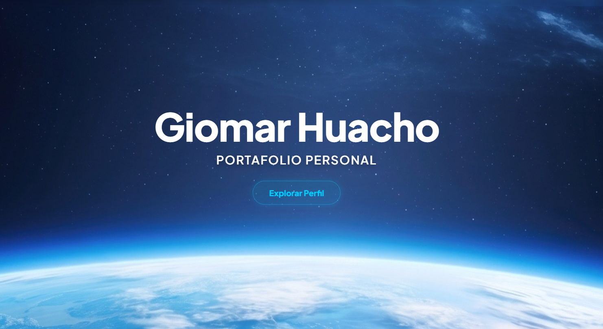
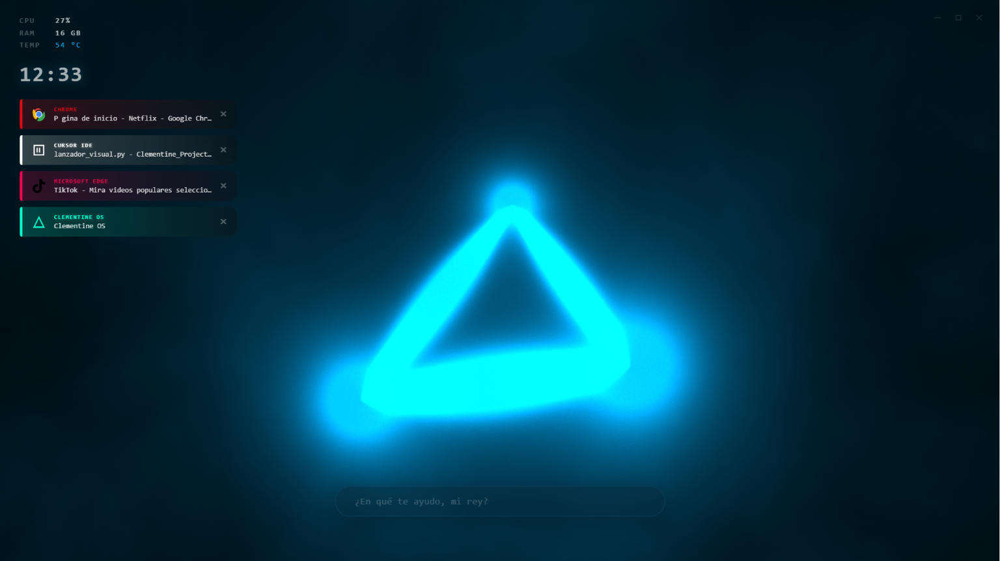

Mis Proyectos
Proyectos de aprendizaje personales

Despliegue de Portafolio Web
Diseño, desarrollo y publicación de mi propio entorno web personal enfocado a la administración de sistemas, utilizando tecnologías web limpias.
Implementación de un diseño inmersivo transparente, animaciones interactivas fluidas y despliegue automatizado.

Clementine - Agente IA
Desarrollo y programación de un asistente virtual interactivo impulsado por Inteligencia Artificial y motores LLM de ejecución local.
El sistema cuenta con una arquitectura avanzada que integra sincronización de memoria en la nube y capacidades de razonamiento técnico.